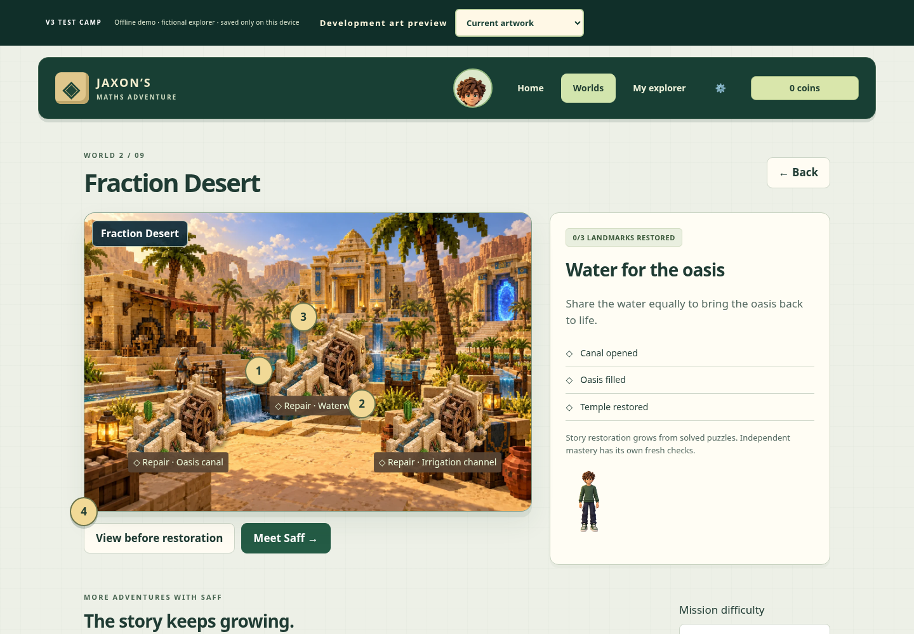
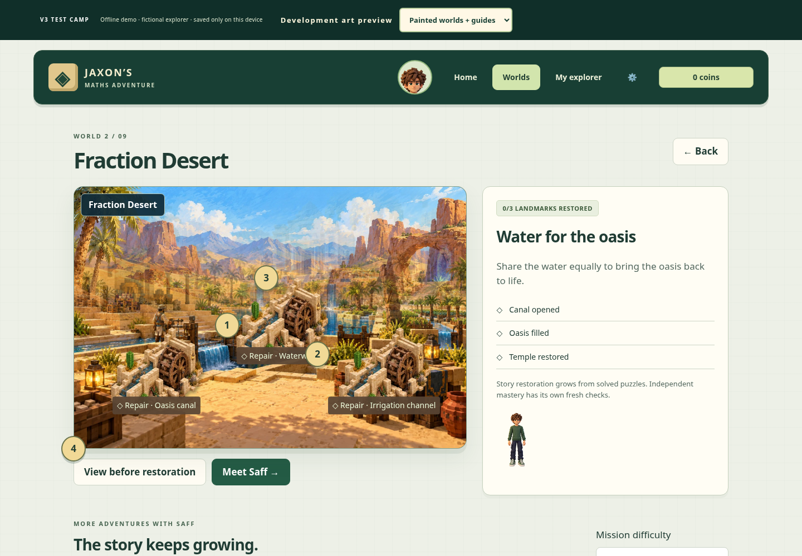
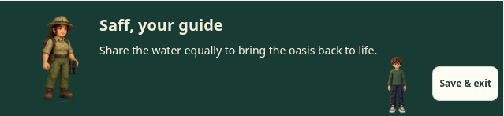
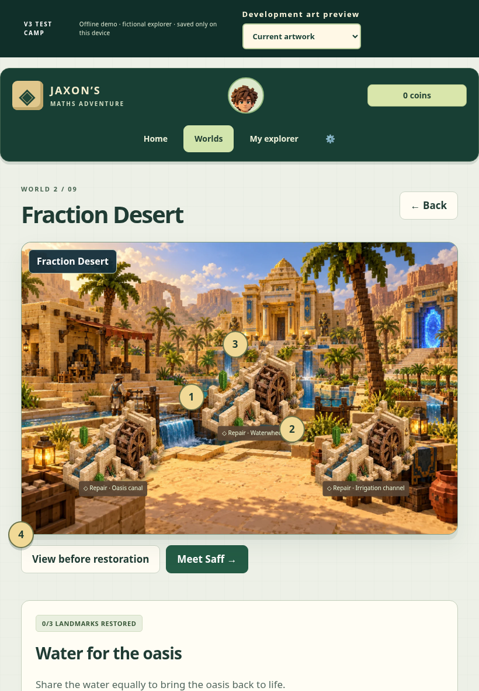
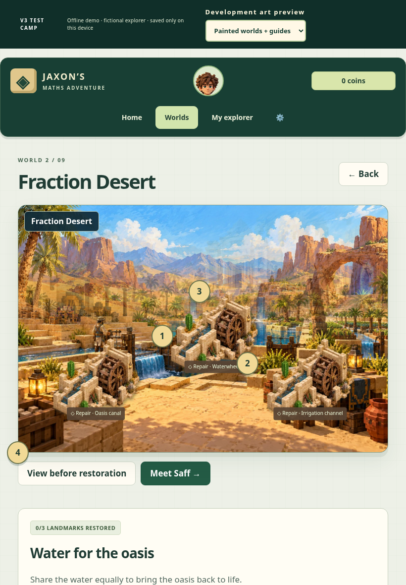
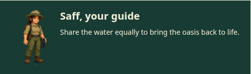
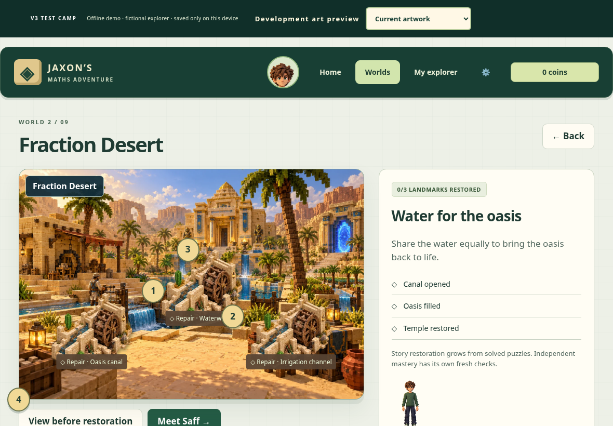
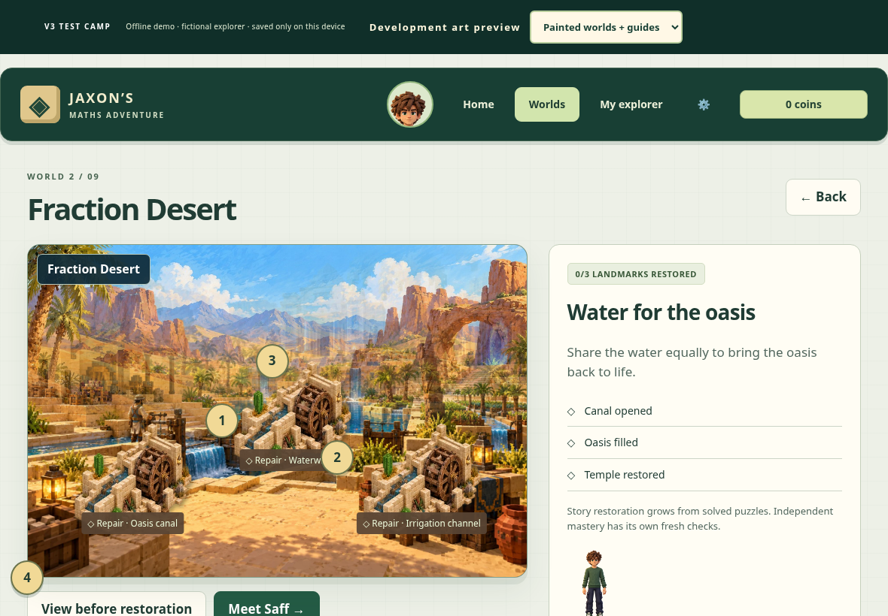
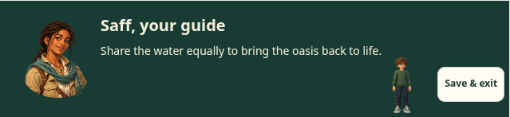

Desktop · 1440 × 1000
Fraction Desert




Saff guide panel



Before and after captures from the actual offline game, using identical fictional progress. Branch: codex/painted-forest-preview, continued from local commit 79cb584.
Validation and visual notes · Machine-readable results
This screenshot gallery opens without a server or account. It is not the playable game.









